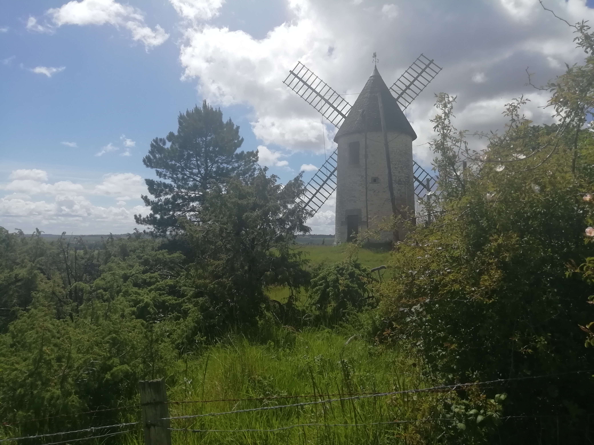
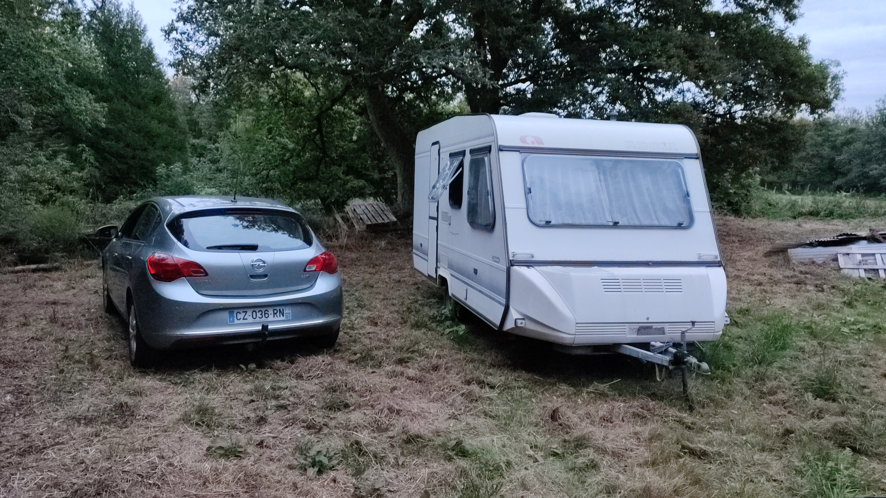
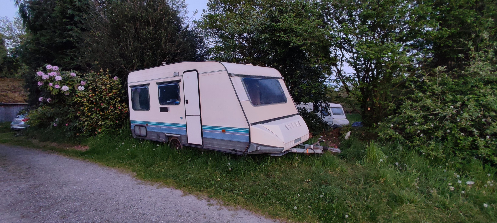
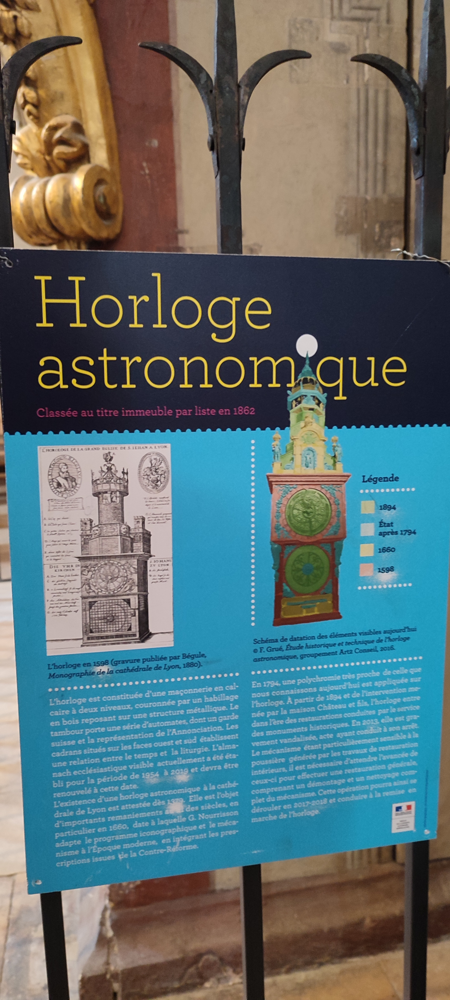

My life changelog from 2021 to 2024.

December 2020
On this blog post I explained that I started in December 2020 to work for phpMyAdmin. In fact in 20/11/2020 I was officially a freelance and could start invoicing clients.
2021
Until 09/2021 I was working for phpMyAdmin, but one day my previous boss called me back. He asked me if I would want to work for the client I was working for when I was their employee. I agreed, this was an opportunity to end up what I had left behind me. I loved that mission because of how much I had improved their code and infrastructure.
The story about this mission
This was my first job after I had finished with school. My first commit to this project was in 03/10/2018. In fact this client has tried to hire another development company to do the work. Maybe it was for them a way to test if we where doing the job or not. But that nearly costed them taking the company near to thinking about closing. Their customers where unhappy. The story is that at the moment where they "fired" us, I had passed on some of my knowledge to the new team. And had given instructions on how to maintain the project.
I pushed one last commit on the day 26/06/2020:
Merge branch 'QA' into development (bye everybody, good luck !)
Just remember my first commit back in the day 1e8781697caf57752fabe9b4889dfc521d74ff52 the 03/10/2018
But you can easily guess that they did not follow my instructions and when I did come back the tech debt was burning down the project.
They agreed to all of the features the client wanted, but did not do the necessary refactoring work.
Implementing stuff in front-ends with nasty hacks. That meant that the front-ends where very slow on some crucial operations. For example instead of passing down an array to the back end they called foreach item do POST /api.
What a mess. Even invoices where generated on the fly, but never stored. We (me and the new team) had to revert most of what they did. This team of thieves in my opinion mostly robbed the client while not doing the necessary work.
It took them one year and some months to take an updated and production ready project into shreds and deep tech debt.
On the 03/09/2021 I was back pushing commits and started taking the project out of the fire. I took some days off to sort out my new workaway. And started for real on the 27/09/2021.
On the 07/09/2021 my best friend joined the party, thank you so much ! We had awesome moments together and killed tech debt and cleaned the project.
Being back on this project was awesome, I really loved it. Very good and incredible memories.
The "workaway" lifestyle
After some seaching I had found a workaway near where my parents live. Because before that I was spending awesome time with my best friend 5 hours long from where my parents where.

I will not give too much details, but I ended up seaching for this workaway to find some place where I could help and have some more/different fun in my life. On the 11/09/2021 I arrived at this new location. My sleeping place was an Adria caravan.
On this picture you can see my car (Opel Astra) and the Adria caravan. (The licence plate is no longer mine, I sold the car)
I spent so much good days sleeping in this caravan. It was peaceful and I could enjoy the noise of rain falling and wind blowing.

So, what was my mission at this workaway: Helping with the animals, repairing and maintaining buildings or meadows.
The unexpected event: One month after my arrival, I met my incredible girlfriend. We both love animals and nature. Meeting someone in such a place really made sense.

At the end of the year I bought myself an Adria caravan from 1988.
Adria Caravan from 1988
With some repairs done to the front, that's why a panel is slightly more beige.

2022
This was a year of hard work, I had a lot of work for my client and also had to help at the workaway. And I renovated my caravan.
On 25/04/2022 my best friend left the project I started working on in 2021. It is now a bit less fun to work on.
In 10/2022 I was in Berlin at eurorust 2022, it was a cool event where I met nice developers.

At the end of this year I took some vacations on the Reunion island. This also was the end of my workaway. I also shut down my freelance status.
Reunion island


2023
I started this new year I was now an employee of my own company (100% shareholder). This has social benefits like retirement and health insurance. But it also costs much more than a freelance status. For a freelance it is only ~24% taxes on the income/invoices.
I am very glad with this new status, it simplifies some aspects in my life. My company also provides hosting services to other companies. At the start of the year in 03/2023 I got myself an appartment. Nothing incredible but that was the only rent I could afford. I miss working and living in my caravan.
At the same time period I sold my Opel Astra car and bought the exact same one but running on gas, the previous one was running on gasoline. I did this swap because it was the right time to sell the other one as it had not too much kilometers. Some not so much bucks I now have the same one with ~100 000 km less. I visited the south of France in my trip to go buy the car.
Visiting Lyon

Company's office
At the end of the year, I bought for my company a place to host it's "office". This really was for me some light since I started working very hard in 09/2021.
There is a lot of roof work to do, and ivy on one of the sides.

January -> mid March 2024
I started trying to slow down my work schedule. That helped do some open-source tasks and having a better quality of life. And the office I managed to get rid of most of the ivy and patched part of the roof. You can notice the left part has newer or cleaner slates.

I am now looking forward for a better work schedule and maybe getting back to work for phpMyAdmin. And also updating my open-source libraries and projects.